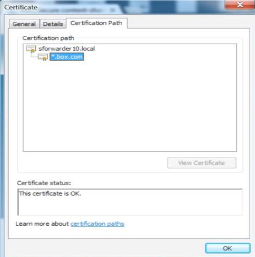

Secure Forwarder
First install a virtual appliance for the Secure Forwarder. Go to Install a Virtual Appliance to choose your preferred option. After deploying a virtual appliance, follow the steps below.
Configuring the Secure Forwarder involves configuring the interface, system, and certificates.
To configure the Secure Forwarder:
Power up the Secure Forwarder and open the console view.
Log into the Secure Forwarder using the credentials
nsadmin/nsappliance.Note
You can change your password by using the command,
auth change-password nsadmin.When you first log in, you will be dropped into the system shell. Your prompt should change to
nsappliance>.At the
nsapplianceprompt, enterconfigureto go to configuration mode.
Configure the Interface
At this point you have a valid Secure Forwarder that has an identity. You now have to configure two aspects of Secure Forwarder: interface configuration and proxy settings that steer web traffic to your tenant instance in the Netskope cloud.
In the sample network below, Secure Forwarder's client-facing interface, dp1, is connected to the 172.16.0.0/23 subnet. The interface configuration uses IP ranges within the subnet for accepting client traffic. The Secure Forwarder management plane (mp) interface will be assigned the IP 172.32.0.2 in the management subnet 172.32.0.0/24, and its egress interface, dp2, will be assigned the IP 10.100.1.2 in the subnet 10.100.1.0/24.

Issue the following commands to configure the IP addresses:
Note
You can also use the show interface command to verify the configuration.
set interface mp ip 172.3.0.2 set interface mp netmask 255.255.255.0 set interface mp gw 172.32.0.1 set interface dp1 ip 172.16.1.10-172.16.1.60,172.16.1.64,172.16.1.65-172.16.1.125,172.16.1.200-172.16.1.225 set interface dp1 netmask 255.255.254.0 set interface dp1 gw 172.16.0.1 set interface dp2 ip 10.100.1.2 set interface dp2 netmask 255.255.255.0 set interface dp2 gw 10.100.1.1
Do note that the dp1 interface IP address can either be a full /24 block of IPs, or you can also assign non-contiguous IP addresses and/or IP address range. Example above shows the non-contiguous IP address and IP address range assigned for dp1.
Configure the System
First you need to install the tenant license key. You can get the license key from Settings > Security Cloud Platform next to where you downloaded the VA package.
Copy the license key.
In configuration mode, install the license key with the command:
set system licensekey <licensekey>.Next, configure the system hostname. Set the hostname type with the command:
set system hostname <hostname>.
Configure Explicit Proxy Mode
In the explicit proxy mode, the appliance acts as a proxy server or integrates with the existing proxy servers in the network to serve as the explicit proxy for the web domains. You can make the Secure Forwarder an explicit proxy server using the following methods.
Configure the proxy hostname and port
Configure the PAC file
Configure the proxy hostname and port
All the web traffic is sent directly to the Secure Forwarder on a specific port. To configure the proxy hostname and port,
Enable the explicit proxy mode on the Secure Forwarder, run
set dataplane proxy-mode explicit enable true
Configure the default IP address that the Secure Forwarder uses to listen to the client traffic. This address is the first address configured on the inbound interface.
set dataplane proxy-listener-ip 172.16.1.10
Optionally, specify the TCP port for the explicit proxy. If not specified, the default port is 8080.
set dataplane proxy-mode explicit listener-port <port>
Configure the PAC file
You can direct all web traffic to the Secure Forwarder while other traffic can go through your existing proxy server. To do this, the Secure Forwarder needs to be configured to access the contents of the existing PAC file.
The Secure Forwarder can be configured by using a custom PAC file. Host your customized PAC file directly on the Secure Forwarder to redirect web traffic to the appliance's proxy server and all other traffic to your existing proxy server.
Use a custom PAC file
If you want to host your customized PAC file directly on the applianceSecure Forwarder.
Open an nsshell and enter the command
configure.Set the IP address to host the merged PAC file server on the applianceSecure Forwarder. If not provided, the IP address of the DNS server is used if it is configured:
set dataplane pac-server listener-ip <PAC server IP>Set the TCP port to host the merged PAC file server on the applianceSecure Forwarder:
set dataplane pac-server listener-port <PAC server port>Paste the contents of the PAC file server:
set dataplane pac-server custom-pac
Enable the PAC file server:
set dataplane pac-server enable true
Save the configuration:
save
The PAC file will be hosted at
http://<PAC server IP>:<pac-server-port>/wpad.datandhttp://<PAC server IP>:<pac-server-port> /proxy.pac.Enable the explicit proxy mode for the applianceSecure Forwarder by doing the following:
set dataplane proxy-mode explicit enable true
Optionally, specify the fully-qualified domain name that resolves to the IP configured for the applianceSecure Forwarder. This host name will be used in the merged PAC file. If this setting is not provided, the applianceSecure Forwarder IP will be present in the merged PAC file.
set dataplane pac-server hostname sfproxy.yourdomain.com
Optionally specify the TCP port for hosting the Secure Forwarder explicit proxy. The default port used by the applianceSecure Forwarder is 8080.
set dataplane proxy-mode explicit listener-port <explicit proxy port>Save the configuration.
save
Configure the Certificates
With connectivity now configured, you need to set up server side certificates to enable SSL inspection. You can use either a self-signed CA certificate or a CA certificate preferably signed by the enterprise's Root or intermediate CA. See Use your own CA certificates.
Alternatively, the applianceSecure Forwarder can generate a self-signed certificate without CA. See Generate a self-signed certificate without CA.
Use your own CA certificates
Make sure that the CA certificate of the applianceSecure Forwarder has a common name.
Enter the command:
set dataplane forward-proxysecure-forwarder server-cert
Copy and paste your CA certificate in the buffer, press Enter , then type
Ctrl-Dto exit.Enter the command:
set dataplane forward-proxysecure-forwarder server-key
Copy and paste your private key in the buffer, press Enter , then type
Ctrl-Dto exit.Enter the command:
set dataplane forward-proxysecure-forwarder server-intermediate-ca-chain
Copy and paste any additional certificates in the following order:
Server certificate (as provided in step 1)
Intermediate CA certificate
Root CA certificate
Press Enter , then type
Ctrl-Dto exit.Enter
saveand press Enter to save the configuration.
Generate a self-signed certificate without CA
If you are not using a CA and want the appliance Secure Forwarder to generate a self-signed certificate, run the following command:
run request certificate generate forward-proxysecure-forwarder self-signed city <city> common-name <common-name> country <country> days <days> email-address <email-address> organization <organization> organization-unit <organization-unit> state <state>
Here's an example command to generate self-signed certificate:
run request certificate generate forward-proxysecure-forwarder self-signed city "Los Altos" common-name "dpappliance.netskope.com""sforwarder.netskope.com" organization "netskope" organization-unit "netskope cert authority" state "CA" country "US" email-address "admin@netskope.com"
Enter
saveand press Enter to save the configuration.
Enable the Secure Forwarder Connection
Now enable the Secure Forwarder
set dataplane secure-forwarder enable true
Now save the entire configuration with the command save, and then press Enter.
You have now completed the installation and configuration of the Secure Forwarder, and Secure Forwarder will make an initial connection to Netskope cloud.
Note
From nsshell, you can use the SCP command to export and import a configuration.
Verify the Secure Forwarder Connection
To verify that Secure Forwarder successfully connected to tenant instance in the Netskope cloud, go to Settings > Security Cloud Platform > On-Premises Infrastructure. Scroll down the page until you see Secure Forwarder displayed with a Serial Number and Name. Last Seen shows the last time Secure Forwarder connected to the Netskope cloud.
Tip
It takes few minutes to refresh the status in the UI.
Verify the Certificates
To verify that the web traffic is forwarded by the Secure Forwarder to the tenant instance in the Netskope cloud, browse to any web domain managed by Netskope (like Box.com) and verify that the SSL certificate presented is the certificate installed on the Secure Forwarder.
The image below shows a self-signed Root CA certificate installed on the Secure Forwarder that is presented to a browser.
|  |